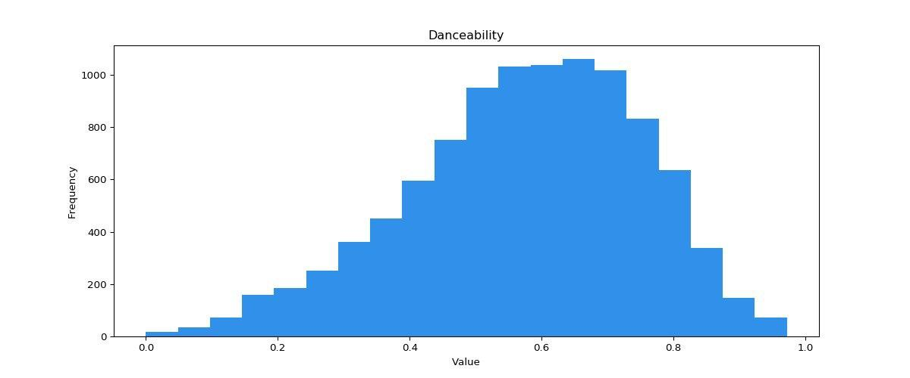
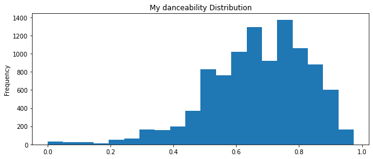
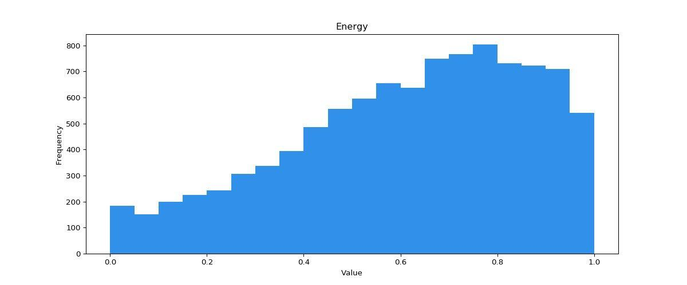
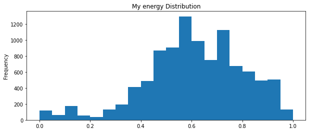
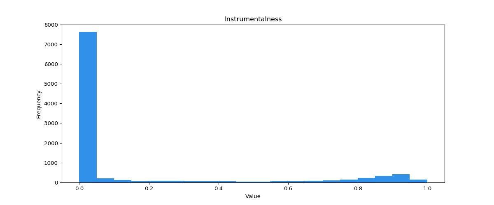
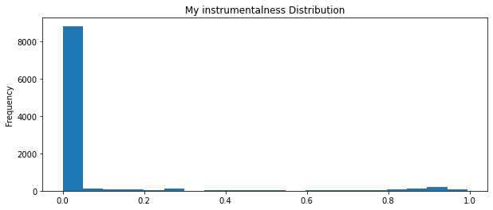
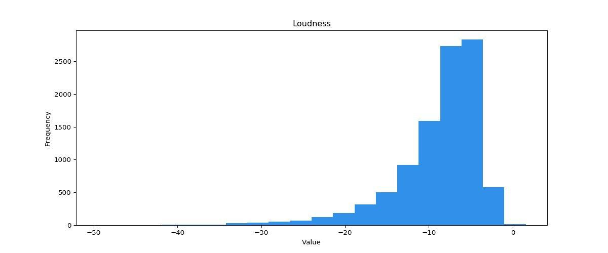
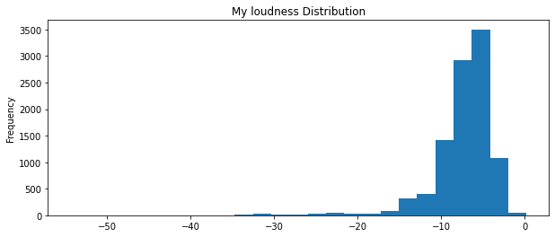
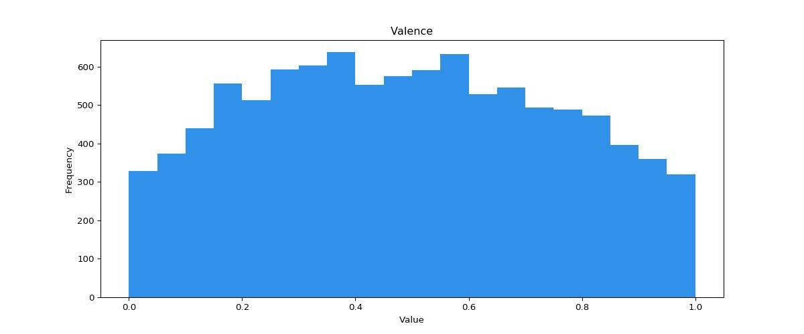
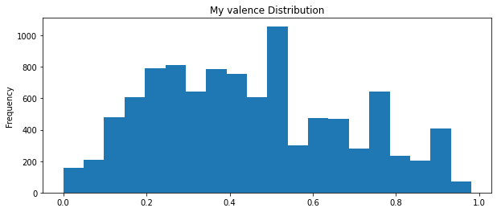

In part 3 of this adventure we discover the audio features that Spotify attributes to songs. We see how they are influenced by specific genres and how some songs relate to different audio features like instrumentalness and energy.
Analysis
Music
BI
Author
Bauke Brenninkmeijer
Published
August 20, 2020
In part 3 we are going to take a look at the audio features that Spotify labels songs with. They have 9 self-determined variables, that all indicate different aspects of a song. You’ll learn all about them below. In part 2, we looked at how my genres are and changed over time. Now we’ll take a look at how the audio features correspond to the changes in genres and how the genres are defined in the sense of these features.
The main research questions of part 3 are:
How are my audio features different from the general population?
How are these differences explained by my genres of preference?
Have some of these audio features changed over time, similar to my preference in genres has changed over time?
Lets start!
Loading previous data ⌛
Let’s load up everything and put the track IDs in a list, for easier access. Those are used for scraping.
We need to retrieve the audio features for our songs. For this, we use the song IDs we retrieved in part 1. Lets first define our spotify API credentials again, an initialize the library we use to interact, Spotipy.
We can utilize the .audio_features call (docs) to retrieve a lot of information about a track. We give this call a Spotify track URI, so Spotify knows exactly which track the request is about. However, some songs did not give us an URI when we were getting those. So the resulting track IDs have some None in them.
Lets see what the audio features are of Blue from Gemini.
We can see some metadata like the urls of the song and of this analysis, the track id and then the interesting part: the audio features.
It’s important to know what these features actually represent. You can find the full list on the Spotify website. I’ve included the relevant description in the sections below for each audio features that we will discuss.
If you want to see how you can retrieve this information from Spotify, please check the collapsed cell below.
Code
retrieve_audio_features =False# programmical toggle for easier working. Please ignore. if retrieve_audio_features: track_features_list = []import mathfor i in tqdm(range(len(track_ids))):if track_ids[i] =='': track_features_temp =Noneifisinstance(track_ids[i], float):if math.isnan(track_ids[i]):print('isnan') track_features_temp =Noneelse:try: track_features_temp = spotify.audio_features(track_ids[i])exceptExceptionas e:print(e)print(track_ids[i]) track_features_list += track_features_temp if track_features_temp else [{}] track_features = pd.DataFrame(track_features_list)
We combine the data, resulting in a single dataframe that holds all our data: song metadata, audio features and genres.
# Add our audio features with our track informationcomb = pd.concat([track_info, track_features], axis=1)# Also add the top genres of each songcomb['top_1_genres'] = top_1_genres.top_1_genrescomb['top_1_genres_filtered'] = top_1_genres_filtered.top_1_genres_filtered
Drop the songs without audio features. We drop on acousticness, but it could be any other audio features, since a song either has all of them, or none of them.
comb = comb.dropna(subset=['acousticness'])
The Spotify website also includes distribution plots for most features, so we will take at how you might differ from the general plots and how you can see what causes this. I have selected a subset of audio features, but you can evaluate the rest yourself. Looking at the values they report, their analysis seems to have been done on about 10k data points. To get a better comparison, we will sample 10k data points and compare with that. However, when diving deeper into something interesting, we use the full dataset. In all of the distribution comparisons below, the first plot is from Spotify and the second one from me. Additionally, under each feature I put the description Spotify gives for those features.
Danceability
Danceability describes how suitable a track is for dancing based on a combination of musical elements including tempo, rhythm stability, beat strength, and overall regularity. A value of 0.0 is least danceable and 1.0 is most danceable.
Here, we take a look at danceability. Given my main genres, we should see higher danceability than normally, with EDM being a big part of my listening. And indeed we do see this. In my distribution, we see quite some peaks around 0.8, while the general distribution has only a very small amount of songs with danceability higher than 0.8. Since we only have an image from spotify (and no actual data points), we cannot compare means, but I expect the general distribution mean to be somewhere between 0.5-0.6, while mine is 0.67


Energy
Energy is a measure from 0.0 to 1.0 and represents a perceptual measure of intensity and activity. Typically, energetic tracks feel fast, loud, and noisy. For example, death metal has high energy, while a Bach prelude scores low on the scale. Perceptual features contributing to this attribute include dynamic range, perceived loudness, timbre, onset rate, and general entropy.
Now, energy is a bit strange. In my year in review, Spotify always telling me I listen to so much energetic music. However, looking at this plot, I seem to be way lower than the general distribution.


Let’s see if we get some more clarity if we look at the energy per artist.
Important
For this table and all that follow, the count is just the frequency count of that value, whatever that value might be. If it is an artist, it is the total number of times that artist was played. If it is a song, it is the number of times that song was played.
energy
count
mean
master_metadata_album_artist_name
6ix9ine
260
0.699400
KIDS SEE GHOSTS
302
0.691255
Fresku
264
0.657288
Tchami
370
0.644843
Netsky
466
0.639095
Kid Cudi
853
0.634662
Kendrick Lamar
2740
0.633111
Mac Miller
527
0.628738
Flume
593
0.627781
Travis Scott
265
0.623781
Yellow Claw
2533
0.618704
Various Artists
1594
0.618487
Eminem
1567
0.616364
Yung Internet
373
0.607120
G-Eazy
926
0.605303
Lil Dicky
303
0.588901
Kanye West
1070
0.571160
Parov Stelar
264
0.563025
Vitalic
275
0.543753
Frank Sinatra
804
0.512106
These results I find quite surprising. Yellow Claw, a Dutch trap duo whom I would consider to be generally pretty high energy is equal or below quite some hip hop artists, like Mac Miller and Kid Cudi. We can see the maximum energy in here is 6ix9ine, with a solid 0.69 😂. There is no denying that 6ix9ine is at that level of energy. However, KIDS SEE GHOSTS, the front for Kid Cudi and Kanye West, somehow also has 0.69, while I’d say that is much lower in energy. If we look at Reborn, the most popular song on the album, it’s clearly a pretty slow song.
Alternatively, we can look at the energy of my top songs. Here we get a clearer picture of the effect of different songs.
energy
count
mean
master_metadata_album_artist_name
master_metadata_track_name
Kendrick Lamar
HUMBLE.
125
0.6210
DNA.
124
0.5230
ELEMENT.
93
0.7050
LOYALTY. FEAT. RIHANNA.
81
0.5350
YAH.
81
0.7000
FEEL.
80
0.7950
Travis Scott
goosebumps
99
0.7280
Yellow Claw
City on Lockdown (feat. Juicy J & Lil Debbie)
96
0.8410
Good Day (feat. DJ Snake & Elliphant)
87
0.5660
Open (feat. Moksi & Jonna Fraser)
87
0.5920
Without You (feat. The Galaxy & Gia Koka)
82
0.4880
Invitation (feat. Yade Lauren)
80
0.6620
Love & War (feat. Yade Lauren)
78
0.5330
Last Paradise (feat. Sody)
78
0.5930
Stacks (feat. Quavo, Tinie Tempah & Cesqeaux)
77
0.0812
There are some pretty interesting facts here. First of, we can see see that my idea of Yellow Claw being very high energy is debunked, at least with Spotify’s definition of energy. Because some of these values are very strange, even more so when compared to some other artists and songs. Take for example the song without you from Yellow Claw. This is a dubstep/brostep song, with a pretty high tempo but has a value of 0.4880 for its energy level. This is lower than Frank Sinatra had on average in the previous table. In my opinion, something is wrong there. Furthermore, we can also see that their song Stacks has an energy value of 0.0812, which, by all accounts, should be an anomaly. My expectation is that they trained a neural network with some hand labeled songs, and then applied that to all songs to estimate these values, and something went wrong in the case of this song.
Instrumentalness
Predicts whether a track contains no vocals. “Ooh” and “aah” sounds are treated as instrumental in this context. Rap or spoken word tracks are clearly “vocal”. The closer the instrumentalness value is to 1.0, the greater likelihood the track contains no vocal content. Values above 0.5 are intended to represent instrumental tracks, but confidence is higher as the value approaches 1.0.


This is potentially interesting, since, naturally, hip-hop has a lot of vocals (so low instrumentalness), but genres like electro house and EDM generally don’t have many vocals, so how is this plot explained with almost nothing around 1. We can quickly see why by looking at the most influential artists for the largest genres. I’m showing the top 10 most played artists with their largest genre (e.g. if an artist is tagged as ‘rap’ and ‘west coast hip hop’, we use the more general rap)
count
top_1_genres
master_metadata_album_artist_name
edm
Yellow Claw
2531
Flume
592
Tchami
370
rap
Kendrick Lamar
2738
Eminem
1564
Kanye West
1065
G-Eazy
926
Kid Cudi
852
Mac Miller
527
Lil Dicky
303
As most influential EDM artists, we see Yellow Claw and Flume, both of which have a lot of vocals in their music. This explains our instrumentalness plot!.
However, if we redo this analysis, but we drop the most general genres, we get much more interesting results. To be specific, I’ve ignored the values pop, edm, rap, pop rap and hip hop, unless there were no other genre labels. In that case, we still take that genre. The result is below, and quite interesting. The table shows the top 20 most played artists and the genre they belong to.
master_metadata_album_artist_name
top_1_genres_filtered
master_metadata_album_artist_name
chicago rap
Kanye West
1065
christmas
Frank Sinatra
804
conscious hip hop
Kendrick Lamar
2738
detroit hip hop
Eminem
1564
downtempo
Flume
592
Parov Stelar
263
dutch hip hop
Yung Internet
373
Fresku
263
electro house
Yellow Claw
2531
Tchami
370
Vitalic
274
emo rap
6ix9ine
260
house
FISHER
247
indie pop rap
G-Eazy
926
liquid funk
Netsky
466
rap
Kid Cudi
852
Mac Miller
527
Lil Dicky
303
KIDS SEE GHOSTS
302
Travis Scott
264
Without the super general genres, we can finally start to see some trends. Given the fact that rap is still the main genre of 5 artists, this often seems to be one of few labels applied, possibly with the other labels I was removing. The results is that these artists do not belong to any specific subgenres within hip hop, which is cool to see. Does this also mean they are per definition mainstream?
Note
In part 2, the question arose of why emo rap was one of my main genres in some months. This is also explained by this plot, because 6ix9ine is regarded as emo rap by spotify, and his presence in my listening is very varied, with sometimes none and sometimes quite a bit.
loudness
The overall loudness of a track in decibels (dB). Loudness values are averaged across the entire track and are useful for comparing relative loudness of tracks. Loudness is the quality of a sound that is the primary psychological correlate of physical strength (amplitude). Values typical range between -60 and 0 db.


We can see my music is quite a bit louder than average, with almost all of the mass of the distribution being between -10 and 0, with a small tail between -15 and -10. In the general distribution, the tail extends quite a bit beyond -20, whereas there is virtually nothing beyond -18 in my distribution. Let’s see who is responsible for all of this noise 😠. Let’s plot the loudness of my top 20 most listened artists.
loudness
count
mean
master_metadata_album_artist_name
6ix9ine
260
-5.624454
Travis Scott
265
-5.832879
Kid Cudi
853
-6.496838
Kanye West
1070
-6.535216
KIDS SEE GHOSTS
302
-6.612129
Fresku
264
-6.614091
Netsky
466
-6.690002
G-Eazy
926
-6.849693
Yellow Claw
2533
-6.875627
Kendrick Lamar
2740
-7.033027
Eminem
1567
-7.094228
Various Artists
1594
-7.189992
Tchami
370
-7.304330
Flume
593
-7.348245
Mac Miller
527
-7.576696
Parov Stelar
264
-7.825705
Yung Internet
373
-7.844906
Vitalic
275
-8.272200
Frank Sinatra
804
-8.528413
Lil Dicky
303
-9.120274
This table is pretty clear. We see that none of my top 20 most played artists have an average loudness lower than -10, indicating quite high loudness on average. If we look at the top 5, we see that apparently hip hop artists are very loud, but also specifically Kid Cudi, Kanye West, and then those two combined in KIDS SEE GHOSTS. The reason for this I expect to be that they have sounds playing at almost at all times, rather than that they are extremely loud in their peaks.
It also comes as no surprise that 6ix9ine is the loudest, since he’s essentially screaming in most of his songs 😅.
valence
A measure from 0.0 to 1.0 describing the musical positiveness conveyed by a track. Tracks with high valence sound more positive (e.g. happy, cheerful, euphoric), while tracks with low valence sound more negative (e.g. sad, depressed, angry).
This is a very interesting feature. Let’s see what information it gives us!


That’s quite the difference! First off, we can see a clear decline towards 1.0 for my distribution, whereas in the general distribution, this is much rounder. Furthermore, we can see that my distribution a lot spikier, possibly indicating the effects of certain albums/songs that have been played a lot and have a very narrow spread with regards to valence. In general we can see my music taste leans more towards the low side of valence, indicating a preference for sad, depressed and angry music. In general, I think it will be angry, which is the sentiment in a lot of hip hop, but also techno, drum and bass and some parts of house.
If we look at the most positive and most negative songs with more than 5 plays, we see some interesting results.
valence
count
mean
master_metadata_album_artist_name
master_metadata_track_name
Lil Dicky
White Crime
19
0.00000
Eminem
White America
31
0.00000
Kanye West
Fade
37
0.00000
Ellen Allien
Stormy Memories
10
0.00001
Hollen
Sleeping Dogs - Original
11
0.01400
...
...
...
...
Ed Sheeran
Shape of You
9
0.93100
Fresku
Chickie (skit)
15
0.93800
Victor Ruiz
Brujeria
7
0.96000
Kendrick Lamar
Momma
36
0.96300
Yung Internet
Helemaal Top (feat. Donnie)
48
0.96300
1171 rows × 2 columns
We can see that there are likely some errors in here, with White Crime and White America both having a score of 0.0. On the positive side, we see Yung Internet with Helemaal Top, which is a song about feeling great. Furthermore, we have Kendrick Lamar’s Momma. This is interesting cause it does not typically resonate as a very happy or cheerful song. We’ll attribute this to the Spotify interpretation of this value. See for yourself:
If we take a higher level view, we can look at the artists and identify more broader trends.
valence
count
mean
master_metadata_album_artist_name
Kanye West
1070
0.327687
Tchami
370
0.360095
Netsky
466
0.383689
KIDS SEE GHOSTS
302
0.414606
Yellow Claw
2533
0.430344
Frank Sinatra
804
0.434713
Lil Dicky
303
0.445153
G-Eazy
926
0.445842
Mac Miller
527
0.462410
Kendrick Lamar
2740
0.469246
Various Artists
1594
0.476991
Kid Cudi
853
0.486193
Eminem
1567
0.493737
Yung Internet
373
0.511973
Flume
593
0.575045
Some interesting insights: 1. Kanye is depressing: Kanye West is very low in valence, meaning most of his songs are angry, depressed or sad. This makes sense, given his oeuvre, with songs like Waves (sad), Violent Crimes (sad), Piss On Your Grave (angry) and I Am A God (angry). 2. Bias of electronic music: We have some electronic artists like Tchami and Netsky which also rank very low, but which are not specifically angry or sad music producers in my experience. Maybe electronic music has a bias here and is faster to be considered angry or sad? 3. Non-polarity: We see quite some artists hovering around 0.5, indicating either a healthy balance in valence between their songs or just a general non-polarity in their songs. I took a detailed look at Kanye West for the first point, and he has a wide spread, with the weight more on the sad and angry side, hence his low average valence. I assume most artists will be similar, and have a wide spread between their songs.
Audio features per Genre 🎸
Apart from the details per feature, we can also take a look at how these distributions are affected by genres. We’ll cherry-pick some interesting ones.
Energy in Rap and EDM
Important
From here one out, all plots are again interactive. Try to disable some things in the legend!
Given our results in previous sections, one of the things I’d like to look deeper into is the effects of EDM and rap with regards to energy.
Above, we see the Kernel Density Estimation (KDE) of energy for rap and EDM. Rap is strange, since it seems to have two distinct peaks; one around 0.6 and one around 0.75. EDM has a more well defined single peak at 0.6. Furthermore, we see that EDM is more prevalent in the high energy values, which is not too unsurprising to see. Let’s dive a bit deeper into the two peaks of rap.
If we plot different hip hop subgenres, we can see how these peaks come to be. We plot the largest three hip hop subgenres. Detroit hip hop seems to have more of a peak around 0.75, while conscious hip hop and chicago rap have peaks around at 0.6. It seems that they have a lot more energy in Detroit!
Valence in Rap and EDM
We can see some interesting differences in valence for these genres. We observe that EDM is more prevalent in the low valence values (0.0-0.2), dropping to zero much later than rap. Rap, on the other hand, is more prevalent in the 0.3-0.5 range than EDM. Now, we still don’t know if 0.5 valence means it is neutral, but it can tell us at least that rap is on average less sad and angry than EDM, which I find an interesting discovery, since I would have guessed it the other way around.
Audio features against each other ⚔️
To find interesting relationships between these audio features, we can create a pairplot, that create a scatterplot for each two variables. Because the calculation time for the number of data points times the number of plots is very high, we sample the dataset. This should allow us to visualize the distributions in general sense. We don’t require each individual data point here.
We sample 2000 data points at random. We also filter on the two largest genres, EDM and rap, so we can see some differences between these genres.
Thats a pretty big plot with a lot of information. Lets see if we can find some interesting insights.
Distribution differences between rap and EDM: We see that in the outliers, there are generally many more EDM songs than rap songs. This might indicate that in EDM, there is more variation in these aspects. This phenomenon is visible in the instrumentalness plots, because in this category, almost all of the outliers are in EDM. But this is also the case for valence vs loudness, energy vs danceability, loudness vs danceability and some others. We see that several variables are returning, meaning that there’s a distribution difference in those marginal distributions.
Outliers: We can see two outliers in many plots, being Sound of Walking Away from Illenium, and White Iverson from Post Malone. This is because Sound of Walking Away is just incredibly low on loudness. White Iverson is more interesting, because it is still part of the general distribution in loudness, albeit on the edge. But the combination of its features is just often very unique, like in loudness vs instrumentalness, instrumentalness vs energy and instrumentalness vs danceability. If compared to just the rap tracks, it’s also an outlier in danceability vs acousticness and acousticness vs loudness.
Linear relationships: We can also identify some roughly linear relationships.
Acousticness and Loudness: As acousticness increases, loudness seems to decrease, especially near the high acousticness values.
Energy vs loudness: As the energy of a song increases, so does it loudness often. This is not a huge surprise, given the songs that are used for dancing.
Energy vs Acousticness: Unsurprisingly, given the two former points, there is also a relationship visible between energy and acousticness, where the energy decreases with the increase of acousticness.
I’ve also created the large version of above plot, with more columns and more datapoints. See it here big plot
Audio features over time
As a last area of research, lets have a look at how some of these features might have changed over time in my listening behaviour.
The last thing we’ll take a look at is, like with the genres, whether my preference for these audio features changed over time. I’ve plotted the ones with the same range, so loudness, tempo and duration are excluded. For completeness, I looked at loudness but there were no interesting insights there. In the chart above, we can see a couple interesting things. 1. General increase in stability: We can observe an increase in stability for most of the features, likely explained due to the increased stability in genres and the higher listening volume. 2. Deccrease in Acousticness: Furthermore, we can see a decrease in acousticness. The reduction in acousticness is expected with hip hop and EDM becoming the main genres. 3. A turbulent start: Lastly, we see that the first 6 months were quite turbulent, but this is likely related with the fact that we don’t have that much data for those months.
In general, no big revelations from this plot! We can conclude that no big changes have happened with regards to the features of the audio.
In conclusion
In part 3 we have taken a closer look at the audio features that are in Spotify data, specifically for my listening. We’ve seen what the effects of EDM and rap are on certain audio features For rap, we’ve also seen how it’s distribution is built up from the distributions of the subgenres. Lastly, we’ve also seen how most of the audio features relate to other features, and what songs are outliers in those distributions.
With regards to my initial goal: to track what I’m doing (and also learn about myself), this part was a bit harder. The audio features are not always intuitive to interpret and can differ from what your expectations are. They are also a lot less interesting in daily life, whereas favorite artists is still quite fun to know (in my opinion). Nevertheless, it was quite interesting to see what the effects of genres and subgenres were on the global distribution.
For now, that’s it! I’ve seen enough Spotify data and I’m looking for something new.
If you liked this blogpost, don’t hesitate to reach out to me on linkedin or twitter. 😊